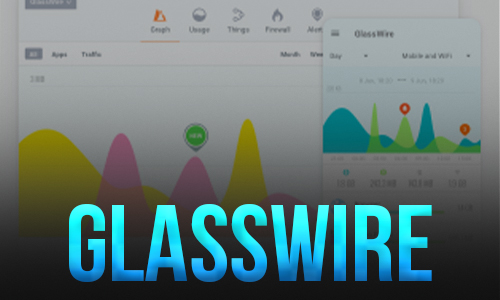
14.11.2021
GlassWire - это монитор сетевой безопасности и фаервол для контроля вашей
сети. Инструмент защищает компьютер, наглядно представляя сетевую
активность на удобном графике и помогая выявлять необычное поведение
вредоносных программ в Интернете

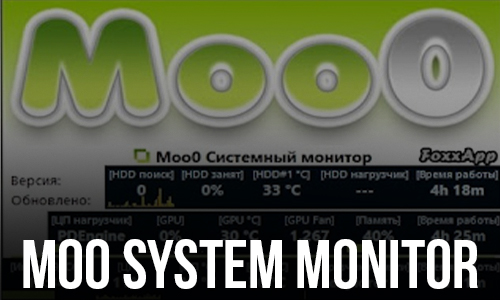
14.11.2021
Moo0 SystemMonitor - программа для мониторинга использования системных
ресурсов ПК. Отображает различную информацию прямо на рабочем столе в
виде панели. Вы сможете убрать ненужную информацию и добавить то, что вам интересует в данный момент.
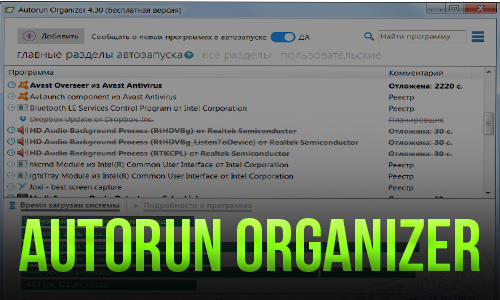
14.11.2021
Autorun Organizer - менеджер автозагрузки, который позволяет просматривать,
проверять на вирусы и управлять программами, запускающимися
автоматически при старте системы Windows.
14.11.2021
WizTree – бесплатная утилита, которая поможет найти файлы и папки на
жестком диске, которые занимают большое количество пространства.
Программа удобна и проста в использовании.Работает в Windоws XP, Vista,
7, 8, 10 (32/64-бит).
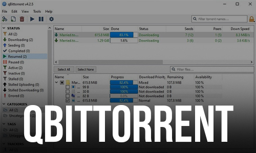
14.11.2021
qBittorrent - бесплатный торрент-клиент для Windows, Mac и Linux,
поддерживающий все протоколы и функции P2P-сетей, а также имеющий
удобный пользовательский интерфейс. В программе qBittorrent также
отсутствует реклама.
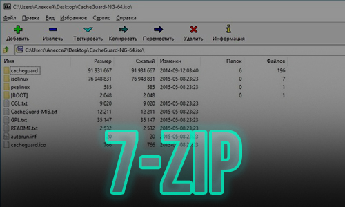
14.11.2021
7-Zip - бесплатный файловый архиватор с открытым исходным кодом, который отличается высоким уровнем сжатия, возможностью проверки целостности
архивов и защитой архивов паролем с использованием методов шифрования
AES-256 или ZipCrypto.
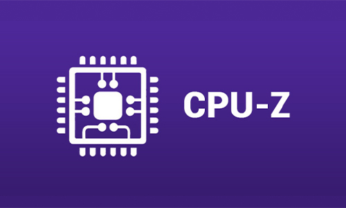
14.11.2021
CPU-Z - утилита, которая предоставит вам самую подробную информацию об установленном в системе процессоре, памяти, кэше и материнской плате.
Вам всего лишь нужно запустить приложение и оно выдаст на вашем экране
все данные вашего пк: название и модель процессора,его тактовую частоту и ТД
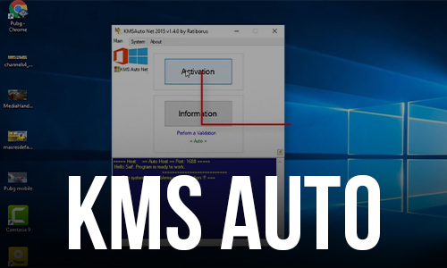
14.11.2021
KMSAuto Net – KMS-активатор автоматического типа для операционных систем
линейки Microsoft Windows, их серверных версий, а также программного
обеспечения Microsoft Office. На нашем сайте вы можете бесплатно скачать
активатор KMSAuto для Windows.
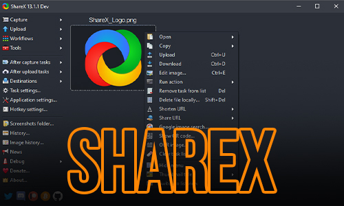
14.11.2021
ShareX - мощная многофункциональная утилита для снятия скриншотов с
экрана монитора с возможностью использования дополнительных
инструментов для их редактирования и обработки.
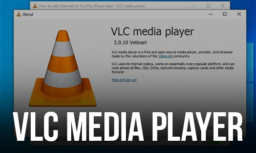
15.11.2021
VLC — бесплатный и свободный кросс-платформенный медиаплеер и
медиаплатформа с открытым исходным кодом. VLC воспроизводит множество мультимедийных файлов, а также DVD, Audio CD, VCD и сетевые трансляции.
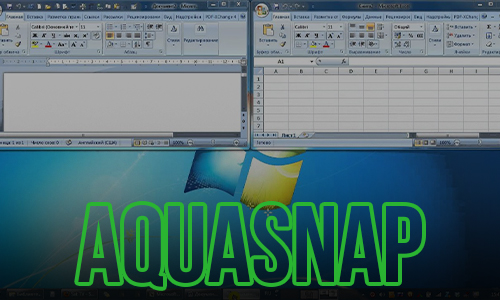
15.11.2021
AquaSnap - удобная утилита, которая позволяет более эффективно управлять
окнами на рабочем столе монитора, предоставляющая в распоряжение
пользователя такие функции, как Aero Snap, Aero Shake, Aero Stretch и
Aqua Glass.
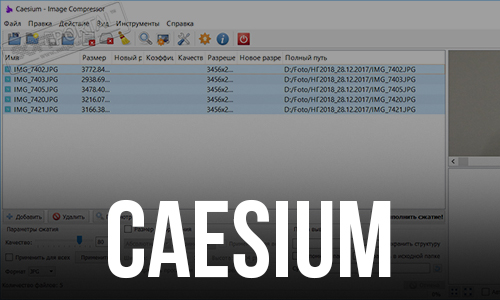
15.11.2021
Caesium – это простая программа для сжатия любых изображений на вашем
жестком диске так, чтобы они занимали меньше место лишь с минимальной
потерей качества.Работает в системах Windows XP и выше (32 и 64 бит).